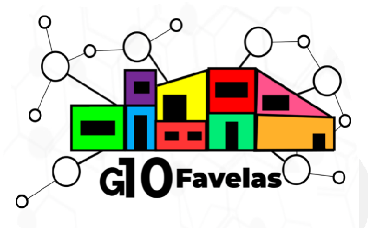

O G10 Favelas é uma organização sem fins lucrativos. Para saber mais sobre o trabalho realizado e também contribuir
clique aqui asjksdjkas fkjgfkgf fdjkfkldf dflkdfkldfkldf dflkdfkllkdf
dfkjdfkdf dflkdfkldfklkldf dflkdfklerirmndfmdf dflodf dfjdfkd dfiodfnmdf dfhjdf fgkfg fgjkfg dshre
